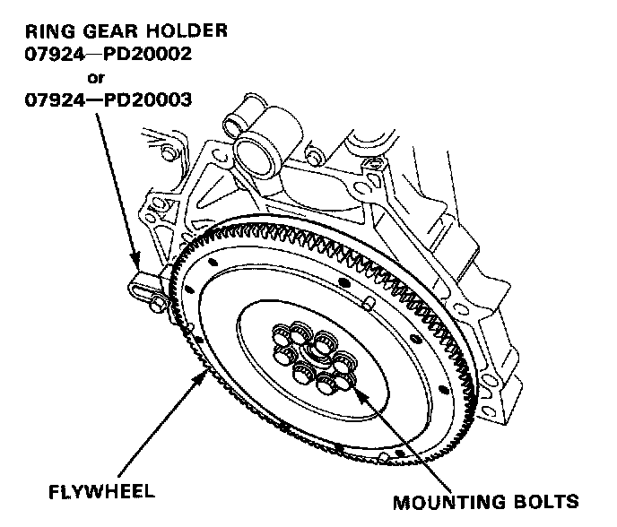
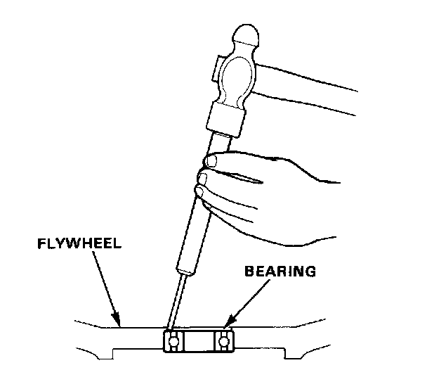
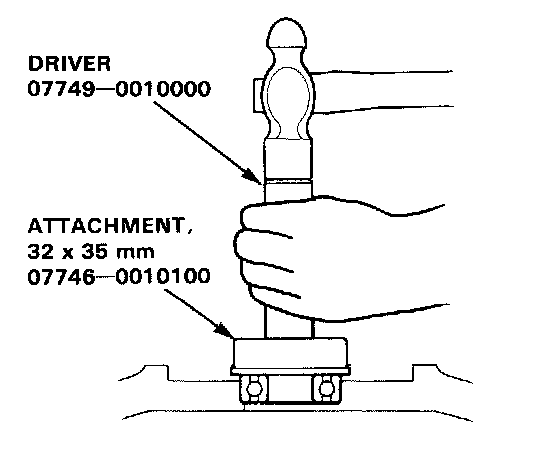

Flywheel: Service and Repair
Replacement
1. Remove the eight flywheel mounting bolts and flywheel.

2. Remove the bearing from the flywheel.

3. Drive in the new bearing into the flywheel using the special tools.


